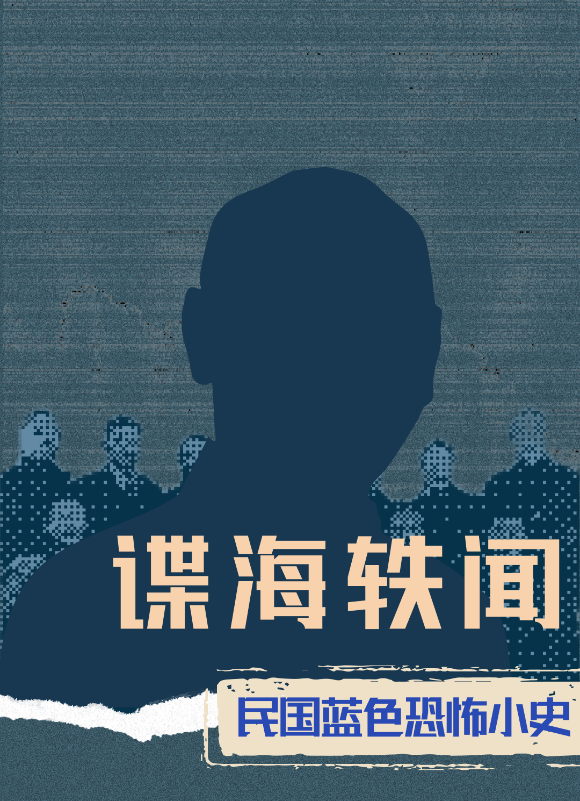
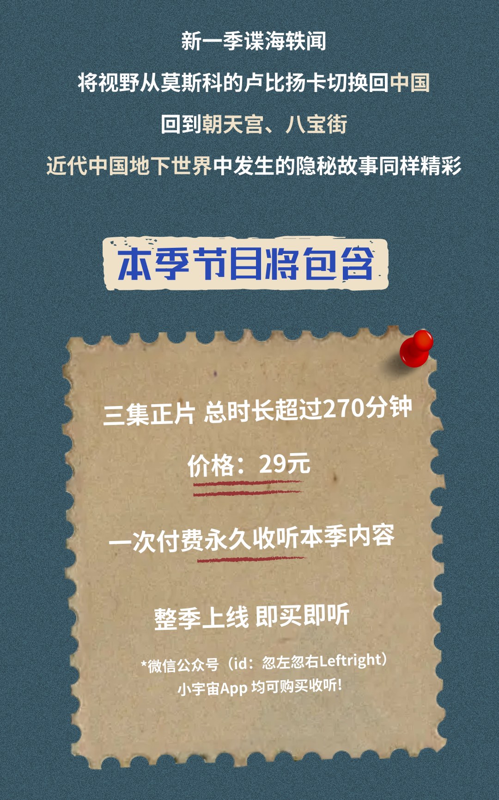
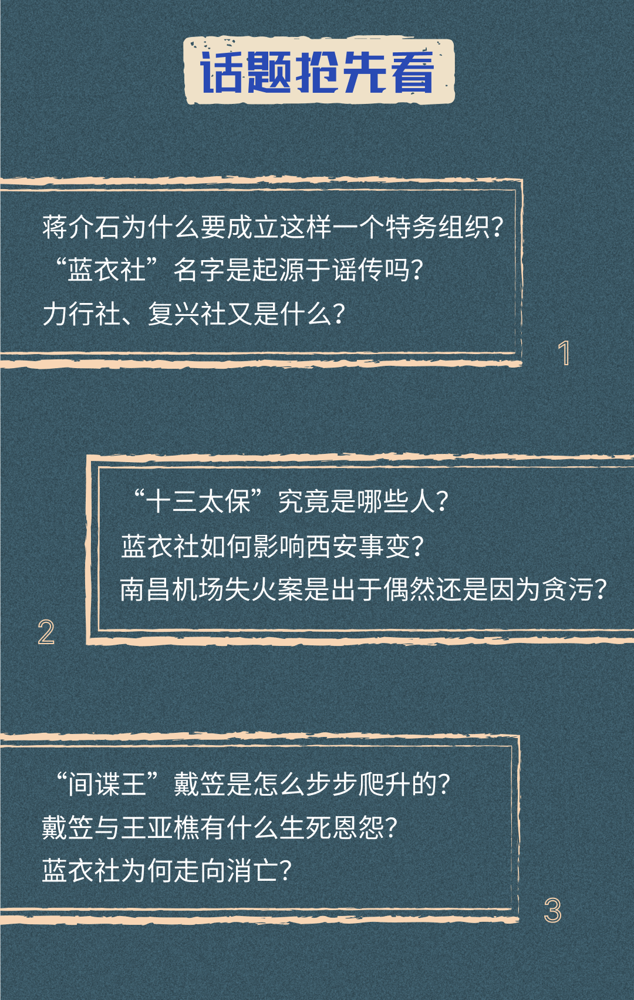
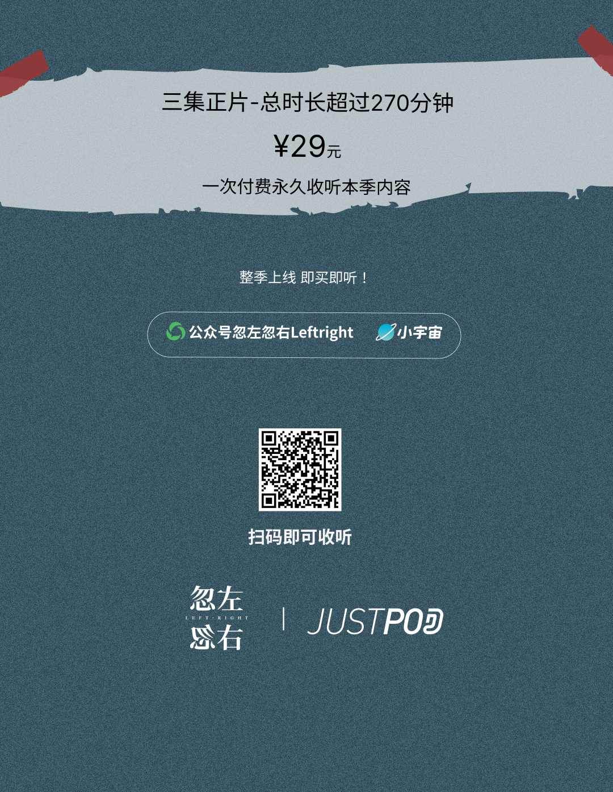
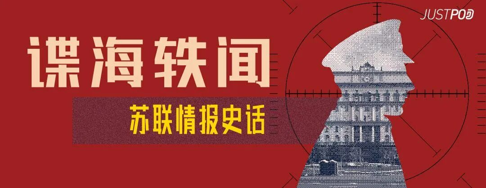
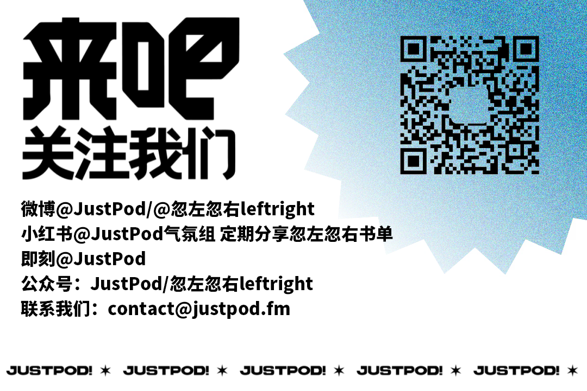

「谍海轶闻」上新，你可能不了解的《民国蓝色恐怖小史》

今年七月，《忽左忽右》首次推出「谍海轶闻」的付费系列节目《苏联情报史话》，收获了大量听众的支持和鼓励，关于下一季「谍海轶闻」的询问也纷至沓来。
新一季「谍海轶闻」，我们决定把视野从莫斯科的卢比扬卡转回到中国，回到朝天宫、八宝街——
近代中国地下世界中
发生的隐秘故事
同样精彩。
有这么一个团体在往期节目里被频频提及。
它仅仅存续了六年，却串联起民国历史上1927年到1937年这十年中的各种重大事件，中统和军统都曾隐没在它的阴影中——
“
蒋介石的话，他一直无法有效地控制国民党这个党部的机关，所以他必须在自己身边、围绕他个人搞一个小圈子。军事群体可能就是以黄埔军校的学生为代表，特务群体就是像他早期做的这些力行社、蓝衣社，到最后变成军统。
——沙青青
《忽左忽右》225期
谍海轶闻 | 抗战未期的「和谈」情报战
魏斐德笔下的“间谍王”戴笠，也曾托身于这个群体——
“
南昌机场大火案，让特务处得到了极大的扩张。但在此之前特务处本身就在不断地扩张，戴笠这个人就是一门心思要把自己的势力做大，当时南昌机场大火案相当于给了戴笠一个很好的机会。
——郑诗亮
《民国蓝色恐怖小史》EP3
间谍王是怎样崛起的
它始于一群理想主义青年们的爱国热情，却走向了向法西斯靠拢的激进主张——
“
蓝衣社它很有意思的一点，虽然自始至终它的权力基本来自于蒋介石这样一个最高领袖的赋予，但实际上蓝衣社并不是最高领袖画了一个圈要在这儿，建这么一个组织，规定你们都穿蓝衣服才有了蓝衣社。
蓝衣社反而是一个诞生于基层的年轻人之间的组织，它正好和蒋介石本人在那一时期的需求两边接上了。所以其实他们的出身是非常发自民间的，但实际上被最高领袖给吸纳进了他的个人计划里面。
——程衍樑
《民国蓝色恐怖小史》EP1
蒋介石的至暗时刻与神秘特务组织的兴起
现在，我们推出新一季付费专辑——
《民国蓝色恐怖小史》
本季谍海轶闻，程衍樑和《午后偏见》栏目主播、《上海书评》执行主编郑诗亮一起，从三重视角拆解民国历史上最鲜为人知的秘密组织蓝衣社。
小宇宙搜索「谍海轶闻」
或点击本号菜单栏
即可收听！
在《蓝色恐怖小史》里
你能听到什么？




Bonus Time！
随着《民国蓝色恐怖小史》的发布，情报历史的又一块拼图被拼上。今年我们围绕「谍海轶闻」的规划还不止于此，更多节目、活动、企划都在秘密筹备中。
你还在想哪里与「谍海轶闻」见面？请留言告诉我们，我们将会在评论区抽出10位朋友送出本次《民国蓝色恐怖小史》的小鹅通兑换码。
祝各位收听愉快！


谍海轶闻｜苏联情报史话
